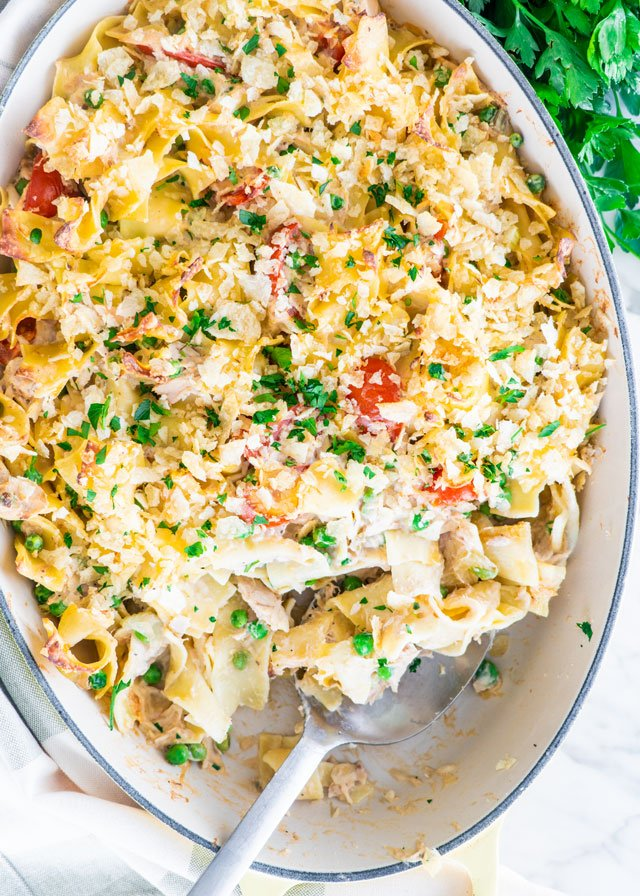

Tuna Casserole

Description
Tuna casserole is a casserole primarily made with pasta (or rice) and canned tuna, with canned peas and corn
sometimes added. The dish is often topped with potato chips, corn flakes, bread crumbs or canned fried
onions.[1] Tuna casserole is a common dish in some parts of the United States, prepared using only nonperishable
pantry ingredients.
Ingredients
- 3 cups egg noodles
- 1 tablespoon butter
- 1 small onion diced
- ⅔ cup frozen peas defrosted
- 1 can tuna 5-6 ounces, drained
- 10 ½ ounces condensed mushroom soup
- ...and other things
Steps
- Preheat oven to 425°F. Combine topping ingredients and set aside.
- Boil noodles al dente according to package directions. Drain and rinse under cold water.
- Cook onion and celery in butter until tender, about 5-7 minutes.
- In a large bowl combine noodles, onion mixture, peas, soup, milk, cheese, tuna and parsley. Mix well.
- Spread into a 2qt casserole dish and top with crumb topping.
- Bake 18-20 minutes or until bubbly.